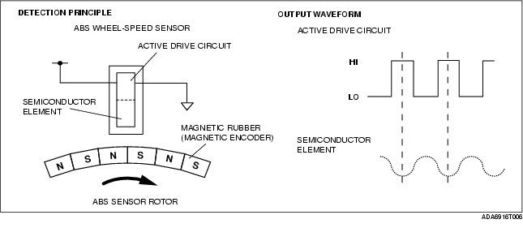

ABS wheel-speed sensor and ABS sensor rotor construction/operation
Construction
• The ABS wheel speed sensor utilizes a semiconductor element that contains an active drive circuit (MR element*). The front sensor is installed on the knuckle and the rear sensor is installed on the hub spindle.
• The ABS sensor rotor utilizes a magnetic encoder that functions with magnetic rubber. The front sensor rotor is integrated with the wheel bearing oil seal and the rear rotor sensor is pressure-fit inside the brake drum.
*: A magneto-resistive force, where an exterior magnetic field changes the resistance of the element, forms on this element.
- • When inspecting the ABS wheel speed sensor, do not use a tester to inspect resistance. It is possible that the voltage from the tester could damage the semiconductor inside the ABS wheel speed sensor. Inspect using the data monitor of the WDS or equivalent.
- • Pay careful attention to the bearing installation direction when replacing the front wheel bearing. If the bearing is not installed in the correct direction, the ABS sensor rotor will not function.
- • Magnetic encoder: A plate that has positive and negative poles (marked out) in a continuous, alternating line.
ABS wheel-speed sensor and sensor rotor (front)

ABS wheel-speed sensor and sensor rotor (rear)

Operation
• As the ABS sensor rotor rotates, the magnetic flux between the ABS wheel speed sensor and the ABS sensor rotor change periodically. This periodic change is in proportion to the rotation speed.
• The semiconductor element in the wheel speed sensor detects the change in magnetic flux, and the active drive circuit converts it to a rectangular wave signal, which is sent to the ABS HU/CM.
• For every single rotation of the ABS sensor rotor, 44 rectangular wave pulse signals are output. The CM in the ABS HU/CM calculates the wheel speed from the periodicity of these pulses.
